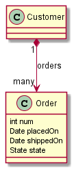

Wicket Viewer
1. Wicket Viewer
The Wicket Viewer automatically exposes an Apache Isis domain object model for use by end-users. The viewer is implemented using Apache Wicket.
This user guide discuss end-user features, configuration and customization of the Wicket viewer.
It also discusses how to extend the viewer, and the (non-ASF) Incode Platform wicket components.
1.1. Other Guides
Apache Isis documentation is broken out into a number of user and reference guides.
The user guides available are:
The reference guides are:
The remaining guides are:
-
Developers' Guide (how to set up a development environment for Apache Isis and contribute back to the project)
-
Committers' Guide (release procedures and related practices)
2. Features/end-user usage
This section discusses features of the wicket viewer from the perspective of an end-user actually using your Isis application.
2.1. Recent pages (drop down)
The Wicket viewer provides a recent pages drop-down that acts as a breadcrumb trail. Using it, the user can quickly open a recently accessed domain object.
2.1.1. Screenshots
The following screenshot, taken from the Estatio application, shows the recent pages drop-down after a number of pages have been accessed.
|
Note that this screenshot show an earlier version of the Wicket viewer UI (specifically, pre 1.8.0). |
2.1.2. Domain Code
The recent pages drop-down is automatically populated; no changes need to be made to the domain classes.
2.1.3. User Experience
Selecting the domain object from the list causes the viewer to automatically navigate to the page for the selected object.
2.1.4. Related functionality
The bookmarked pages (sliding panel) also provides links to recently visited objects, but only those explicitly marked as @DomainObject(bookmarking=…). The bookmarks panel also nests related objects together hierarchically (the recent pages drop-down does not).
2.1.5. Configuration
The number of objects is hard-coded as 10; it cannot currently be configured.
2.2. Bookmarked pages
The Wicket viewer supports the bookmarking of both domain objects and query-only (@Action(semantics=…)) actions.
Domain objects, if bookmarkable, can be nested.
Bookmarking is automatic; whenever a bookmarkable object/action is visited, then a bookmark is created. To avoid the number of bookmarks from indefinitely growing, bookmarks that have not been followed after a whle are automatically removed (an MRU/LRU algorithm). The number of bookmarks to preserve can be configured.
2.2.1. Screenshots
The following screenshot, taken from Isisaddons example todoapp (not ASF) shows how the bookmarks are listed in a sliding panel.

|
Note that these screenshots show an earlier version of the Wicket viewer UI (specifically, pre 1.8.0). |
Note how the list contains both domain objects and an action ("not yet complete").
Bookmarks can also form a hierarchy. The following screenshot, also taken from the Estatio application, shows a variety of different bookmarked objects with a nested structure:

Some - like Property, Lease and Party - are root nodes. However, LeaseItem is bookmarkable as a child of Lease, and LeaseTerm is bookmarkable only as a child of LeaseItem. This parent/child relationship is reflected in the layout.
2.2.2. Domain Code
To indicate a class is bookmarkable, use the @DomainObjectLayout annotation:
@DomainObjectLayout(
bookmarking=BookmarkPolicy.AS_ROOT
)
public class Lease { ... }To indicate a class is bookmarkable but only as a child of some parent bookmark, specify the bookmark policy:
@DomainObjectLayout(
bookmarking=BookmarkPolicy.AS_CHILD
)
public class LeaseItem { ... }To indicate that a safe (query only) action is bookmarkable, use the @ActionLayout annotation:
public class ToDoItem ... {
@Action(
semantics=SemanticsOf.SAFE
)
@ActionLayout(
bookmarking=BookmarkPolicy.AS_ROOT
)
public List<ToDoItem> notYetComplete() { ... }
...
}|
The BookmarkPolicy.AS_CHILD does not have a meaning for actions; if the |
2.2.3. User Experience
The sliding panel appears whenever the mouse pointer hovers over the thin blue tab (to the left of the top header region).
Alternatively, alt+[ will toggle open/close the panel; it can also be closed using Esc key.
Related functionality
The Recent Pages also lists recently visited pages, selected from a drop-down.
2.2.4. Configuration
By default, the bookmarked pages panel will show a maximum of 15 'root' pages. This can be overridden using a property (in isis.properties), for example:
isis.viewer.wicket.bookmarkedPages.maxSize=202.3. Hints and copy URL
While the user can often copy the URL of a domain object directly from the browser’s address bar, the Wicket viewer also allows the URL of domain objects to be easily copied from a dialog.
More interestingly, this URL can also contain hints capturing any sorting or page numbering, or hiding/viewing of collections. End-users can therefore share these URLs as a form of deep linking into a particular view on a domain object.
The copy URL and hinting is automatic.
2.3.1. Screenshots
The following screenshots are taken from the [Estatio](https://github.com/estatio/estatio) application.
Copy URL
This screenshot shows the copy URL button (top right):

|
Note that these screenshots show an earlier version of the Wicket viewer UI (specifically, pre 1.8.0). |
Clicking on this button brings up a dialog with the URL preselected:

The URL in this case is something like:
http://localhost:8080/wicket/entity/org.estatio.dom.lease.Lease:0
The user can copy the link (eg ctrl+C) into the clipboard, then hit OK or Esc to dismiss the dialog.
Hints
Using the viewer the user can hide/show collection tables, can sort the tables by header columns:
Also, if the collection spans multiple pages, then the individual page can be selected.
Once the view has been customised, the URL shown in the copy URL dialog is in an extended form:
The URL in this case is something like:
http://localhost:8080/wicket/entity/org.estatio.dom.lease.Lease:0?hint-1:collectionContents-view=3&hint-1:collectionContents:collectionContents-3:table-DESCENDING=value&hint-1:collectionContents:collectionContents-3:table-pageNumber=0&hint-2:collectionContents-view=0&hint-2:collectionContents:collectionContents-2:table-pageNumber=0&hint-3:collectionContents-view=2&hint-3:collectionContents:collectionContents-2:table-pageNumber=0&hint-4:collectionContents-view=3&hint-4:collectionContents:collectionContents-3:table-ASCENDING=exerciseDate&hint-4:collectionContents:collectionContents-3:table-pageNumber=0&hint-5:collectionContents-view=0&hint-5:collectionContents:collectionContents-3:table-pageNumber=0
Copy URL from title
When the user invokes an action on the object, the URL (necessarily) changes to indicate that the action was invoked. This URL is specific to the user’s session and cannot be shared with others.
A quick way for the user to grab a shareable URL is simply by clicking on the object’s title:
2.3.2. User Experience
The copy URL dialog is typically obtained by clicking on the icon.
Alternatively, alt+] will also open the dialog. It can be closed with either OK or the Esc key.
2.4. Titles in Tables
Object titles can often be quite long if the intention is to uniquely identify the object. While this is appropriate for the object view, it can be cumbersome within tables.
If an object’s title is specified with from @Title annotation then the Wicket viewer will (for parented collections) automatically "contextualize" a title by excluding the part of the title corresponding to a reference to the owning (parent) object.
In other words, suppose we have:
so that Customer has a collection of `Order`s:
public class Customer {
public Set<Order> getOrders() { ... }
...
}and Product also has a collection of `Order`s (please forgive the suspect domain modelling in this example (!)):
public class Product {
public Set<Order> getOrders() { ... }
...
}and where the Order class references both Customer and Product.
The `Order’s might involve each of these:
public class Order {
@Title(sequence="1")
public Customer getCustomer() { ... }
@Title(sequence="2")
public Product getProduct() { ... }
@Title(sequence="3")
public String getOtherInfo() { ... }
...
}In this case, if we view a Customer with its collection of Order`s, then in that parented collection’s table the customer’s property will be automatically excluded from the title of the `Order (but it would show the product). Conversely, if a Product is viewed then its collection of `Order`s would suppress product (but would show the customer).
|
This feature is a close cousin of the |
The above annotations mean that titles usually "just work", altering according to the context in which they are viewed.
|
It is also possible to configure the Wicket viewer to abbreviate titles or suppress them completely. |
2.5. File upload/download
The Isis application library provides the Blob value type (binary large objects) and also the Clob value type (character large object), each of which also includes metadata about the data (specifically the filename and mime type).
A class can define a property using either of these types, for example:
2.5.1. Screenshots
The following screenshots are taken from the Isis addons example todoapp (not ASF):
View mode, empty
Blob field rendered as attachment (with no data):

|
Note that these screenshots show an earlier version of the Wicket viewer UI (specifically, pre 1.8.0). |
Edit mode
Hit edit; 'choose file' button appears:


{kind=link}
{kind=link}
{kind=link}
{kind=link}
{kind=link}
Download
Blob can be downloaded:

Clear
Back in edit mode, can choose a different file or clear (assuming property is not mandatory):

2.5.2. Domain Code
To define a Blob, use:
private Blob attachment;
@javax.jdo.annotations.Persistent(defaultFetchGroup="false")
@javax.jdo.annotations.Persistent(defaultFetchGroup="false", columns = {
@javax.jdo.annotations.Column(name = "attachment_name"),
@javax.jdo.annotations.Column(name = "attachment_mimetype"),
@javax.jdo.annotations.Column(name = "attachment_bytes", jdbcType = "BLOB", sqlType = "BLOB")
})
@Property(
domainEvent = AttachmentDomainEvent.class,
optionality = Optionality.OPTIONAL
)
public Blob getAttachment() { return attachment; }
public void setAttachment(final Blob attachment) { this.attachment = attachment; }To define a Clob, use:
private Clob doc;
@javax.jdo.annotations.Persistent(defaultFetchGroup="false", columns = {
@javax.jdo.annotations.Column(name = "doc_name"),
@javax.jdo.annotations.Column(name = "doc_mimetype"),
@javax.jdo.annotations.Column(name = "doc_chars", jdbcType = "CLOB", sqlType = "CLOB")
})
@Property(
optionality = Optionality.OPTIONAL
)
public Clob getDoc() { return doc; }
public void setDoc(final Clob doc) { this.doc = doc; }The Blob and Clob types can also be used as parameters to actions.
2.6. User Registration
The Wicket viewer provides the ability for users to sign-up by providing a valid email address:
-
from the login page the user can instead follow a link to take them to a sign-up page, where they enter their email address.
-
a verification email is sent using this service; the email includes a link back to the running application.
-
the user then completes the registration process by choosing a user name and password.
-
the Wicket viewer then creates an account for them and logs them in.
In a similar way, if the user has forgotten their password then they can request a reset link to be sent to their email, again by providing their email address.
To support this the framework requires three services to be registered and configured:
-
the user registration service, which provides an API to create the user account
-
the email notification service, which provides an API for to send the verification emails
-
the email service, that is used by the email notification service to actually send the email.
The Apache Isis core framework provides a default implementation of both the email notification service and the email service. If your application uses the (non-ASF) Incode Platform's security module then an implementation is provided by that module; just add to the classpath. Otherwise you will need to provide your own implementation.
|
There is no default implementation of the user registration service in the core framework. |
2.6.1. Screenshots
The user is presented with a login page:

Navigate to the sign up page. Complete the page, and verify:
{kind=link}
Back to the login page:

Email arrives, with link:

Follow the link, complete the page:
{kind=link}
Automatically logged in:

2.6.2. Configuration
There are two prerequisites:
-
register an implementation of the user registration service (eg by using the (non-ASF) Incode Platform's security module)
-
configure the email service
The latter is required if you are using the default email notification service and email service. If you are using your own alternative implementation of the email notification service then it may be omitted (and configure your own alternative implementation as required).
It is also possible to configure the Wicket viewer to suppress the sign-up page link and/or the password reset page.
3. Layout
In implementing the naked objects pattern, Apache Isis aims to infer as much information from the domain classes as possible. Nevertheless, some metadata relating solely to the UI is inevitably required. This chapter describes how this is done both for domain objects using either annotations or using an associated layout file.
The chapter also describes how to customising which columns of associated objects appear in tables. The layout of application menu items is described in a separate chapter.
3.1. Annotation-based Layout
Metadata providing UI hints can be specified either using annotations, or using a layout.xml file.
In most cases you will probably want to use the file-based approach: changes to file layouts are picked up dynamically, and using a file also allows tabs and tab groups to be specified: this is not supported using annotations.
Nevertheless, annotations are still supported and are sometimes useful for very simple objects or just when prototyping. This section explains how.
3.1.1. @MemberOrder
The @MemberOrder annotation is used to specify the relative order of domain class properties, collections and actions.
The annotation defines two attributes, name() and sequence(). Their usage depends on the member type:
-
for properties, the
name()is used to group properties together into a member group (also called a property group or a fieldset. Thesequence()then orders properties within these groups. If noname()is specified then the property is placed in a fallback "General" group, called "General".The name of these member groups/fieldsets are then referenced by
@MemberGroupLayout. -
for collections, the
name()attribute is (currently) unused. Thesequence()orders collections relative to one another -
for actions, the
name()attribute associates an action with either a property or with a collection.-
If the
name()attribute matches a property name, then the action’s button is rendered close to the property, according to@ActionLayout#position()attribute. -
On the other hand if the `name() attribute matches a collection name, then the action’s button is rendered on the collection’s header.
-
If there is no
name()value, then the action is considered to pertain to the object as a whole, and its button is rendered close to the object’s icon and title.
-
Within any of these, the sequence() then determines the relative ordering of the action with respect to other actions that have been similarly associated with properties/collections or left as "free-standing".
For example:
public class ToDoItem {
@MemberOrder(sequence="1")
public String getDescription() { ... }
@MemberOrder(sequence="2")
public String getCategory() { ... }
@MemberOrder(sequence="3")
public boolean isComplete() { ... }
@MemberOrder(name="Detail", sequence="1")
public LocalDate getDueBy() { ... }
@MemberOrder(name="Detail", sequence="2")
public BigDecimal getCost() { ... }
@MemberOrder(name="Detail", sequence="4")
public String getNotes() { ... }
@MemberOrder(name="Misc", sequence="99")
public Long getVersionSequence() { ... }
...
}This defines three property (or member) groups, "General", "Detail" and "Misc"; "General" is the default if no name attribute is specified. Properties in the same member group are rendered together, as a fieldset.
In addition, actions can optionally be associated (rendered close to) either properties or actions. This is done by overloading the @MemberOrder's name() attribute, holding the value of the property or collection.
For example:
public class ToDoItem {
@MemberOrder(sequence="3")
public boolean isComplete() { ... }
@MemberOrder(name="complete", sequence="1")
public ToDoItem completed() { ...}
@MemberOrder(name="complete", sequence="2")
public ToDoItem notYetCompleted() { ...}
@MemberOrder(sequence="1")
public SortedSet<ToDoItem> getDependencies() { ... }
@MemberOrder(name="dependencies", sequence="1")
public ToDoItem add(ToDoItem t) { ...}
@MemberOrder(name="dependencies", sequence="2")
public ToDoItem remove(ToDoItem t) { ...}
...
}will associate the completed() and notYetCompleted() actions with the complete property, and will associate the add() and remove() actions with the dependencies collection.
The value of sequence() is a string. The simplest convention (as shown in the example above) is to use numbers — 1, 2, 3 — though it is a better idea to leave gaps in the numbers — 10, 20, 30 perhaps — such that a new member may be added without having to edit existing numbers.
Even better is to adopt the 'dewey-decimal' notation — 1, 1.1, 1.2, 2, 3, 5.1.1, 5.2.2, 5.2, 5.3 — which allows for an indefinite amount of future insertion. It also allows subclasses to insert their class members as required.
3.1.2. @MemberGroupLayout
The @MemberGroupLayout annotation specifies the relative positioning of property groups/fieldsets as being either in a left column, a middle column or in a right column. The annotation also specifies the relative width of the columns.
The property groups/fieldsets in this case are those that are inferred from the @MemberOrder#name() attribute.
|
It is also possible to combine When file-based layouts are used this way, the |
For example:
@MemberGroupLayout(
columnSpans={3,3,0,6},
left={"General", "Misc"},
middle="Detail"
)
public class ToDoItem {
...
}Four values are given in the columnSpans attribute. The first three are the relative widths of the three columns of property groups. The fourth, meanwhile, indicates the width of a final column that holds all the collections of the object.
The values of these spans are taken as proportions of 12 virtual columns across the page (this taken from the Bootstrap library).
For example:
-
{3,3,0,6}indicates:-
a left column of properties taking up 25% of the width
-
a middle column of properties taking up 25% of the width
-
a right column of collections taking up 50% of the width
-
-
{2,6,0,4}indicates:-
a left column of properties taking up ~16% of the width
-
a middle column of properties taking up 50% of the width
-
a right column of collections taking up ~33% of the width
-
-
{2,3,3,4}indicates:-
a left column of properties taking up ~16% of the width
-
a middle column of properties taking up 25% of the width
-
a right column of properties taking up 25% of the width
-
a far right column of collections taking up ~33% of the width
-
If the sum of all the columns exceeds 12, then the collections are placed underneath the properties, taking up the full span. For example:
-
{4,4,4,12} indicates:
-
a left column of properties taking up ~33% of the width
-
a middle column of properties taking up ~33% of the width
-
a right column of properties taking up ~33% of the width
-
the collections underneath the property columns, taking up the full width
-
3.1.3. Example Layouts
Below are sketches for the layout of the ToDoItem class of the Isis addons example todoapp (not ASF):
The first divides the properties into two equal sized columns (6-6-0) and puts the collections underneath (12):

The next divides the collections into three equal sized columns (4-4-4) and again puts the collections underneath (12):

The last puts the properties into a single column (4-0) and places the collections into the other larger column (8-0):

3.1.4. Other Annotations
All the layout annotations (eg @Regex and @Named) have been deprecated, instead replaced by the various XxxLayout annotations: @ActionLayout @CollectionLayout, @DomainObjectLayout, @DomainServiceLayout, @ParameterLayout, @PropertyLayout, and @ViewModelLayout
3.2. File-based Layouts
Metadata providing UI hints can be specified either using annotations, or using an Xxx.layout.xml file (where Xxx is the entity or view model object to be rendered).
File-based layouts offer a number of benefits:
-
Probably most significantly, the layout can be updated without requiring a recompile of the code and redeploy of the app; fine-tuning the layout with your end users is easy to do
-
Many developers also find it easier to rationalize about layout when all the hints are collated together in a single place (rather than scattered across the class members as annotations).
-
UI hints can be provided for contributed associations and actions that are synthesised at runtime.
It is also possible to download an initial .layout.xml - capturing any existing layout metadata - using the LayoutService (exposed on the prototyping menu) or using a mixin action contributed to every domain object.
There are some downsides, though:
-
file-based layouts are not typesafe: a typo will result in the metadata not being picked up for the element.
-
they suffer from syntactic fragility: an invalid XML document will result in no metadata for the entire class.
-
there is no notion of inheritance, so a
.layout.xmlis required for all concrete classes and also for any abstract classes (if used as a collection type). In contrast, the dewey-decimal format@MemberOrderannotation allows the metadata of the subclass its superclasses to fit together relatively seamlessly.
The Xxx.layout.xml file is just the serialized form of a Grid layout class defined within Apache Isis' applib. These are JAXB-annotated classes with corresponding XSD schemas; the upshot of that is that IDEs such as IntelliJ and Eclipse can provide "intellisense", making iteasy to author such layout files.
|
It is also possible to describe layouts using a If you have an application with older |
3.2.1. Grids vs Components
The layout file distinguishes between two types of element:
-
those that define a grid structure, of: rows, columns, tab groups and tabs.
The rows and columns are closely modelled on Bootstrap 3 (used in the implementation of the Wicket viewer).
-
those that defines common components, of: fieldsets (previously called member groups or property groups), properties, collections, actions and also the title/icon of the domain object itself.
More information about these classes can be found in the reference guide. More information on Bootstrap 3’s grid system can be found here.
3.2.2. Screencast
This screencast describes the feature.
3.2.3. Examples
Probably the easiest way to understand dynamic XML layouts is by example. For this we’ll use the ToDoItem from the (non-ASF) Isis addons' todoapp:

Namespaces
First things first; every .layout.xml file must properly declare the XSD namespaces and schemas. There are two: one for the grid classes, and one for the common component classes:
<?xml version="1.0" encoding="UTF-8" standalone="yes"?>
<bs3:grid
xsi:schemaLocation="http://isis.apache.org/applib/layout/component http://isis.apache.org/applib/layout/component/component.xsd http://isis.apache.org/applib/layout/grid/bootstrap3 http://isis.apache.org/applib/layout/grid/bootstrap3/bootstrap3.xsd"
xmlns:bs3="http://isis.apache.org/applib/layout/grid/bootstrap3"
xmlns:c="http://isis.apache.org/applib/layout/component"
xmlns:xsi="http://www.w3.org/2001/XMLSchema-instance">
...
</bs3:grid>Most IDEs will automatically download the XSD schemas from the specified schema locations, thereby providing "intellisense" help as you edit the file.
Rows, full-width cols, and tabs
The example layout consists of three rows: a row for the object/icon, a row containing a properties, and a row containing collections. In all three cases the row contains a single column spanning the full width of the page. For the property and collection rows, the column contains a tab group.
This corresponds to the following XML:
<bs3:row>
<bs3:col span="12" unreferencedActions="true">
<c:domainObject bookmarking="AS_ROOT"/>
</bs3:col>
</bs3:row>
<bs3:row>
<bs3:col span="12">
<bs3:tabGroup>
<bs3:tab name="Properties">...</bs3:tab>
<bs3:tab name="Other">...</bs3:tab>
<bs3:tab name="Metadata">...</bs3:tab>
</bs3:tabGroup>
</bs3:col>
</bs3:row>
<bs3:row>
<bs3:col span="12">
<bs3:tabGroup unreferencedCollections="true">
<bs3:tab name="Similar to">...</bs3:tab>
<bs3:tab name="Dependencies">...</bs3:tab>
</bs3:tabGroup>
</bs3:col>
</bs3:row>You will notice that one of the columns has an unreferencedActions attribute, while one of the tabGroups has a similar unreferencedCollections attribute. This topic is discussed in more detail below.
Fieldsets
The first tab containing properties is divided into two columns, each of which holds a single fieldset of multiple properties. Those properties in turn can have associated actions.
This corresponds to the following XML:
<bs3:tab name="Properties">
<bs3:row>
<bs3:col span="6">
<c:fieldSet name="General" id="general" unreferencedProperties="true">
<c:action id="duplicate" position="PANEL_DROPDOWN"/>
<c:action id="delete"/>
<c:property id="description"/>
<c:property id="category"/>
<c:property id="subcategory">
<c:action id="updateCategory"/>
<c:action id="analyseCategory" position="RIGHT"/>
</c:property>
<c:property id="complete">
<c:action id="completed" cssClassFa="fa-thumbs-up"/>
<c:action id="notYetCompleted" cssClassFa="fa-thumbs-down"/>
</c:property>
</c:fieldSet>
</bs3:col>
<bs3:col span="6">
...
</bs3:col>
</bs3:row>
</bs3:tab>The tab defines two columns, each span of 6 (meaning half the width of the page).
In the first column there is a single fieldset. Notice how actions - such as duplicate and delete - can be associated with this fieldset directly, meaning that they should be rendered on the fieldset’s top panel.
Thereafter the fieldset lists the properties in order. Actions can be associated with properties too; here they are rendered underneath or to the right of the field.
Note also the unreferencedProperties attribute for the fieldset; this topic is discussed in more detail below.
|
The Do be aware though that if there are any actions that have been placed on the fieldset’s panel, then these will not be displayed. |
Collections
In the final row the collections are placed in tabs, simply one collection per tab. This corresponds to the following XML:
<bs3:tab name="Similar to">
<bs3:row>
<bs3:col span="12">
<c:collection defaultView="table" id="similarTo"/>
</bs3:col>
</bs3:row>
</bs3:tab>
<bs3:tab name="Dependencies">
<bs3:row>
<bs3:col span="12">
<c:collection defaultView="table" id="dependencies">
<c:action id="add"/>
<c:action id="remove"/>
</c:collection>
</bs3:col>
</bs3:row>
</bs3:tab>As with properties, actions can be associated with collections; this indicates that they should be rendered in the collection’s header.
3.2.4. Unreferenced Members
As noted in the preceding discussion, several of the grid’s regions have either an unreferencedActions, unreferencedCollections or unreferencedProperties attribute.
The rules are:
-
unreferencedActionsattribute can be specified either on a column or on a fieldset.It would normally be typical to use the column holding the
<domainObject/>icon/title, that is as shown in the example. The unreferenced actions then appear as top-level actions for the domain object. -
unreferencedCollectionsattribute can be specified either on a column or on a tabgroup.If specified on a column, then that column will contain each of the unreferenced collections, stacked one on top of the other. If specified on a tab group, then a separate tab will be created for each collection, with that tab containing only that single collection.
-
unreferencedPropertiesattribute can be specified only on a fieldset.
The purpose of these attributes is to indicate where in the layout any unreferenced members should be rendered. Every grid must nominate one region for each of these three member types, the reason being that to ensure that the layout can be used even if it is incomplete with respect to the object members inferred from the Java source code. This might be because the developer forgot to update the layout, or it might be because of a new mixin (property, collection or action) contributed to many objects.
The framework ensures that in any given grid exactly one region is specified for each of the three unreferenced… attributes. If the grid fails this validation, then a warning message will be displayed, and the invalid XML logged. The layout XML will then be ignored.
3.2.5. More advanced features
This section decribes a number of more features useful in more complex layouts.
Multiple references to a feature
One feature worth being aware of is that it is possible to render a single feature more than once.
For example, the dashboard home page for the (non-ASF) Isis addons' todoapp shows the "not yet complete" collection of todo items twice, once as a table and also as a calendar:

This is accomplished using the following (slightly abbreviated) layout:
<grid ...>
<row>
<col span="2" unreferencedActions="true">
...
</col>
<col span="5" unreferencedCollections="true" cssClass="custom-padding-top-20">
<ns2:collection id="notYetComplete" defaultView="calendar"/> (1)
</col>
<col span="5" cssClass="custom-padding-top-20">
<ns2:collection id="notYetComplete" defaultView="table" paged="5"/> (2)
<ns2:collection id="complete" defaultView="table"/>
</col>
<col span="0">
<ns2:fieldSet name="General" id="general" unreferencedProperties="true"/>
</col>
</row>
</grid>| 1 | render the collection in "calendar" view |
| 2 | also render the collection in "table" view |
In the middle column the notYetComplete collection is rendered in "calendar" view, while in the right-most column it is rendered in "table" view.
It is also possible to reference object properties and actions more than once. This might be useful for a complex domain object with multiple tabs; certain properties or actions might appear on a summary tab (that shows the most commonly used info), but also on detail tabs.
Custom CSS
The ToDoApp’s dashboard (above) also shows how custom CSS styles can be associated with specific regions of the layout:
<grid ...>
<row>
<col span="2" unreferencedActions="true">
<ns2:domainObject/>
<row>
<col span="12" cssClass="custom-width-100"> (1)
<ns2:action id="exportToWordDoc"/>
</col>
</row>
...
</col>
<col span="5" unreferencedCollections="true" cssClass="custom-padding-top-20"> (2)
...
</col>
<col span="5" cssClass="custom-padding-top-20"> (3)
...
</col>
</row>
</grid>| 1 | Render the column with the custom-width-100 CSS class. |
| 2 | Render the column with the custom-padding-top-20 CSS class. |
| 3 | Ditto |
For example the custom-width-100 style is used to "stretch" the button for the exportToWordDoc action in the left-most column. This is accomplished with the following CSS in application.css:
.custom-width-100 ul,
.custom-width-100 ul li,
.custom-width-100 ul li a.btn {
width: 100%;
}Similarly, the middle and right columns are rendered using the custom-padding-top-20 CSS class. This shifts them down from the top of the page slightly, using the following CSS:
.custom-padding-top-20 {
padding-top: 20px;
}3.2.6. Migrating from earlier versions
As noted earlier on, it is possible to download layout XML files using the LayoutService (exposed on the prototyping menu); this will download a ZIP file of layout XML files for all domain entities and view models. Alternatively the layout XML for a single domain object can be downloaded using the mixin action (contributed to every domain object).
There are four "styles":
-
current
-
complete
-
normalized
-
minimal
Ignorig the "current" style (which merely downloads the currently cached layout), the other three styles allow the developer to choose how much metadata is to be specified in the XML, and how much (if any) will be obtained elsewhere, either from annotations in the metamodel or from an earlier .layout.json file if present. The table below summarises the choices:
| Style | @MemberGroupLayout |
@MemberOrder |
@ActionLayout, @PropertyLayout, @CollectionLayout |
|---|---|---|---|
|
serialized as XML |
serialized as XML |
serialized as XML |
|
serialized as XML |
serialized as XML |
not in the XML |
|
serialized as XML |
not in the XML |
not in the XML |
As a developer, you therefore have a choice as to how you provide the metadata required for customised layouts:
-
if you want all layout metadata to be read from the
.layout.xmlfile, then download the "complete" version, and copy the file alongside the domain class. You can then remove all@MemberGroupLayout,@MemberOrder,@ActionLayout,@PropertyLayoutand@CollectionLayoutannotations from the source code of the domain class. -
if you want to use layout XML file to describe the grid (columns, tabs etc) and specify which object members are associated with those regions of the grid, then download the "normalized" version. You can then remove the
@MemberGroupLayoutand@MemberOrderannotations from the source code of the domain class, but retain the@ActionLayout,@PropertyLayoutand@CollectionLayoutannotations. -
if you want to use layout XML file ONLY to describe the grid, then download the "minimal" version. The grid regions will be empty in this version, and the framework will use the
@MemberOrderannotation to bind object members to those regions. The only annotation that can be safely removed from the source code with this style is the@MemberGroupLayoutannotation.
Download either for a single domain object, or download all domain objects (entities and view models).
3.2.7. Domain Services
For more information about layouts, see:
-
LayoutService(whose functionality is exposed on the prototyping menu as an action) and lso the a mixin action -
GridServiceand its supporting services,GridLoaderServiceandGridSystemService -
grid layout classes, defined in the Apache Isis applib
3.2.8. Required updates to the dom project’s pom.xml
Any .layout.xml files must be compiled and available in the classpath. Ensure the following is defined in the dom project’s pom.xml:
<resources>
<resource>
<filtering>false</filtering>
<directory>src/main/resources</directory>
</resource>
<resource>
<filtering>false</filtering>
<directory>src/main/java</directory>
<includes>
<include>**</include>
</includes>
<excludes>
<exclude>**/*.java</exclude>
</excludes>
</resource>
</resources>If using an Apache Isis HelloWorld SimpleApp archetypes, then the POM is already correctly configured.
3.3. Table Columns
The optional TableColumnOrderService SPI service can be used to reorder columns in a table, either for a parented collection (owned by parent domain object) or a standalone collection (returned from an action invocation).
For example, suppose there is a Customer and an Order:

The order of these properties of Order, when rendered in the context of its owning Customer, can be controlled using this implementation of TableColumnOrderService:
@DomainService(
nature = NatureOfService.DOMAIN,
menuOrder = "100" (1)
)
public class TableColumnOrderServiceForCustomerOrders
implements TableColumnOrderService {
public List<String> orderParented(
final Object parent,
final String collectionId,
final Class<?> collectionType,
final List<String> propertyIds) {
return parent instanceof Customer && "orders".equals(collectionId)
? Arrays.asList("num", "placedOn", "state", "shippedOn")
: null;
}
public List<String> orderStandalone(
final Class<?> collectionType,
final List<String> propertyIds) {
return null;
}
}| 1 | specifies the order in which the TableColumnOrderService implementations are called. |
4. Menu Bars Layout
The actions of domain services are made available as menu items on menus. By default each domain service corresponds to a single menu on this menu bar, with its actions as the drop-down menu items. This is rarely exactly what is required, however; it often makes sense to group menu items for similar domain services together.
For example, the (non-ASF) Incode Platform modules provides services whose actions appear into two top-level menus:
-
its
ApplicationUsers,ApplicationRoles,ApplicationPermission,ApplicationFeatureViewModelsandApplicationTenanciesdomain services are all grouped together in a single "Security" top-level menu, on the SECONDARY menu bar -
its
MeServicedomain service, which provides theme()action, is placed on the TERTIARY menu bar.
The menus themselves can be placed either on a primary, secondary or tertiary menu bar, as shown in this screenshot (taken from Estatio, an open source estate management application built using Apache Isis):

Within a single top-level menu (eg "Fixed Assets") there can be actions from multiple services. The Wicket viewer shows these as separate sections, with a divider between each:

The tertiary menu bar consists of a single unnamed menu, rendered underneath the user’s login, top right. This is intended primarily for actions pertaining to the user themselves, eg their account, profile or settings:

The Apache Isis framework provides two mechanisms to control the arrangement of domain service actions across menubars and menus, either using annotations or using a file-based layout.
4.1. Annotation-based Menu Bars
The annotations-based approach for arranging the placement of menu items is achieved through the @MemberOrder and @DomainServiceLayout annotations.
4.1.1. @DomainServiceLayout
In the example from Estatio shown above the top-level menu combines the actions from the Properties, Units and FixedAssetRegistrations services. The Properties service is annotated:
@DomainServiceLayout(
named="Fixed Assets",
menuBar = DomainServiceLayout.MenuBar.PRIMARY,
menuOrder = "10.1"
)
public class Properties ... { ... }while the Units service is annotated:
@DomainServiceLayout(
named="Fixed Assets",
menuBar = DomainServiceLayout.MenuBar.PRIMARY,
menuOrder = "10.2"
)
public class Units ... { ... }and similarly FixedAssetRegistrations is annotated:
@DomainServiceLayout(
named="Fixed Assets",
menuBar = DomainServiceLayout.MenuBar.PRIMARY,
menuOrder = "10.3"
)
public class FixedAssetRegistrations ... { ... }Note that in all three cases the value of the named attribute and the menuBar attribute is the same: "Fixed Assets" and PRIMARY. This means that all will appear on a "Fixed Assets" menu in the primary menu bar.
Meanwhile the value of menuOrder attribute is significant for two reasons:
-
for these three services on the same ("Fixed Assets") top-level menu, it determines the relative order of their sections (
Propertiesfirst, thenUnits, thenFixedAssetRegistrations) -
it determines the placement of the top-level menu itself ("Fixed Assets") with respect to other top-level menus on the menu bar.
To illustrate this latter point, the next top-level menu on the menu bar, "Parties", is placed after "Fixed Assets" because the menuOrder of the first of its domain services, namely the Parties service, is higher than that for "Fixed Assets":
@DomainServiceLayout(
named="Parties",
menuBar = DomainServiceLayout.MenuBar.PRIMARY,
menuOrder = "20.1"
)
public class Parties ... { ... }Note that only the menuOrder of the first domain service is significant in placing the menus along the menu bar; thereafter the purpose of the menuOrder is to order the menu services sections on the menu itself.
4.1.2. Ordering menu actions
For a given service, the actions within a section on a menu is determined by the @MemberOrder annotation. Thus, for the Units domain service, its actions are annotated:
public class Units extends EstatioDomainService<Unit> {
@MemberOrder(sequence = "1")
public Unit newUnit( ... ) { ... }
@MemberOrder(sequence = "2")
public List<Unit> findUnits( ... ) { ... }
@ActionLayout( prototype = true )
@MemberOrder(sequence = "99")
public List<Unit> allUnits() { ... }
...
}Note that the last is also a prototype action (meaning it is only displayed in SERVER_PROTOTYPE (=Wicket Development) mode). In the UI it is rendered in italics.
4.1.3. Tertiary Menu
Domain services' actions can be associated with the tertiary menu using the same @DomainServiceLayout annotation, but be aware that the @DomainServiceLayout#name() attribute will be ignored (there is only one effective menu).
For example, the updateEpochDate(…) and listAllSettings(…) actions come from the following service:
@DomainServiceLayout(
menuBar = DomainServiceLayout.MenuBar.TERTIARY,
menuOrder = "10.1"
)
public class EstatioAdministrationService ... {
@MemberOrder(sequence = "1")
public void updateEpochDate( ... ) { ... }
@MemberOrder(sequence = "2")
public List<ApplicationSetting> listAllSettings() { ... }
...
}Because the number of items on the tertiary menu is expected to be small and most will pertain to the current user, the viewer does not place dividers between actions from different services on the tertiary menu.
4.2. File-based Menu Bars
The domain service actions can be arranged across menu items using the menubars.layout.xml file. Not only is this easier to work with, it also can be reloaded dynamically (if in prototype mode), substantially redu.
As for file-based object layouts, this offers a number of benefits:
-
Probably most significantly, the layout can be updated without requiring a recompile of the code and redeploy of the app; fine-tuning the layout with your end users is easy to do
-
Many developers also find it easier to rationalize about menu bars layout when all the hints are collated together in a single place (rather than scattered across the domain service classes as annotations).
There are some disadvantages to using file-based layouts:
-
file-based layouts are not typesafe: a typo will result in the metadata not being picked up for the element.
-
they also suffer from syntactic fragility: an invalid XML document will result in no metadata for the entire class.
The menubars.layout.xml file is just the serialized form of a MenuBars layout class defined within Apache Isis' applib. These are JAXB-annotated classes with corresponding XSD schemas; the upshot of that is that IDEs such as IntelliJ and Eclipse can provide "intellisense", making it easy to author such layout files.
4.2.1. Obtaining an initial layout
An initial menubars.layout.xml - capturing any existing metadata either implicit or explicitly specified through annotations can be downloaded from the MenuBarsService (exposed on the prototyping menu):

This action allows either the "Default" or the "Fallback" layout to be downloaded.
{kind=link}
The "Default" layout is that currently in use, while the "Fallback" layout is that provided only from the annotations. Initially these are identical.
For example, here’s a fragment of that provided by the simpleapp archetype:
<?xml version="1.0" encoding="UTF-8" standalone="yes"?>
<mb3:menuBars
xsi:schemaLocation="..."
xmlns:cpt="http://isis.apache.org/applib/layout/component"
xmlns:lnk="http://isis.apache.org/applib/layout/links"
xmlns:mb3="http://isis.apache.org/applib/layout/menubars/bootstrap3"
xmlns:xsi="http://www.w3.org/2001/XMLSchema-instance">
<mb3:primary>
<mb3:menu>
<mb3:named>Simple Objects</mb3:named>
<mb3:section>
<mb3:serviceAction objectType="simple.SimpleObjectMenu" id="listAll">
<cpt:named>List All</cpt:named>
</mb3:serviceAction>
<mb3:serviceAction objectType="simple.SimpleObjectMenu" id="findByName">
<cpt:named>Find By Name</cpt:named>
</mb3:serviceAction>
<mb3:serviceAction objectType="simple.SimpleObjectMenu" id="create">
<cpt:named>Create</cpt:named>
</mb3:serviceAction>
</mb3:section>
</mb3:menu>
<mb3:menu unreferencedActions="true">
<mb3:named>Other</mb3:named>
</mb3:menu>
</mb3:primary>
<mb3:secondary>
<mb3:menu>
<mb3:named>Prototyping</mb3:named>
...
</mb3:secondary>
<mb3:tertiary>
<mb3:menu>
...
</mb3:menu>
</mb3:tertiary>
</mb3:menuBars>Note the "Other" menu, with unreferencedActions attribute set to true. For a layout file to be valid there must be exactly one <menu> with this attribute set. Any domain service actions that are not explicitly listed will be placed under this menu.
4.2.2. Adjusting the layout
The downloaded menubars.layout.xml file can be adjusted as necessary, creating new menus and menu sections. Once done, it can be saved in the same package as the AppManifest used to bootstrap the application. Subsequently, the file is then parsed and used when the application is started.
If running in prototype mode, the file will be dynamically reloaded from the classpath.
Once the application has bootstrapped with a layout file, downloading the "Default" layout (from the prototyping menu) in essence just returns this file.
|
If, when the application is run, unwanted service actions are shown in the "Other" menu (which you would like to place elsewhere), then download the "Default" layout again. The downloaded file will list out all these domain service actions, so that they can easily be moved elsewhere. |
5. Configuration Properties
Wicket configuration properties alter the way in which Apache Isis' Wicket viewer renders domain objects. They are typically stored in WEB-INF/viewer_wicket.properties.
|
To tell Apache Isis that the Wicket viewer is in use (and should therefore search for the |
If you prefer you can place all configuration properties into WEB-INF/isis.properties (the configuration properties from all config files are merged together).
| Property | Value (default value) |
Description | ||
|---|---|---|---|---|
|
|
|
whether the Wicket debug mode should be enabled. |
||
|
|
+ve int |
number of pages to bookmark |
||
|
|
+ve int |
whether to show the bookmark panel (top-left in the Wicket viewer) |
||
|
|
|
Whether to show chooser for Breadcrumbs (bottom-left in the Wicket viewer) |
||
|
|
date format |
The |
||
|
|
date/time format |
The |
||
|
|
ISO format date |
Specifies a maximum date after which dates may not be specified. See datetimepicker reference docs for further details. The string must be in ISO date format (see here for further details). |
||
|
|
ISO format date |
Specifies a minimum date before which dates may not be specified. See datetimepicker reference docs for further details. The string must be in ISO date format (see here for further details). |
||
|
|
|
For dependent choices, whether to automatically select the first dependent (eg subcategory) when the parameter on which it depends (category) changes. |
||
|
|
|
when running in production mode, whether to show enable the Wicket development utilities anyway. From a UI perspective, this will cause the DebugBar to be shown (top-right). If running in prototyping mode, the development utilities (debug bar) is always enabled. This feature is primarily just to help track any memory leakage issues that might be suspected when running in production. |
||
|
|
|
No longer supported. |
||
|
|
URL |
Specifies the URL if live reload is set up, eg: |
||
|
|
+ve integer |
See discussion below. |
||
|
|
+ve integer, |
See discussion below. |
||
|
|
+ve integer, |
See discussion below. |
||
|
|
|
Whether to disable a form submit button after it has been clicked, to prevent users causing an error if they do a double click. |
||
|
|
|
Whether to disable a no-arg action button after it has been clicked, to prevent users causing an error if they do a double click. |
||
|
|
|
whether the prompt for editing a domain object property or invoking an action (associated with a property) is shown inline within the property’s form, or instead shown in a modal dialog box. For actions, The property can be overridden on a property-by-property basis using Note that |
||
|
|
|
By default, an action invocation that returns the same object will result in the page being updated. The same is true for property edits. If this setting is enabled, then the viewer will always render to a new page.
|
||
|
|
|
Ignored for 1.8.0+; in earlier versions forced regular case rather than title case in the UI |
||
|
|
|
Whether to replace 'disabled' tag with 'readonly' (for w3 spec-compliant browsers such as for Firefox and Chrome 54+) which prevent copy from 'disabled' fields. |
||
|
|
ascii chars |
Cookie key holding the (encrypted) 'rememberMe' user/password. There is generally no need to change this. Valid values as per this StackOverflow answer. |
||
|
|
any string |
Encryption key is used to encrypt the rememberMe user/password. Apache Isis leverages Apache Wicket's rememberMe support which holds remembered user/passwords in an encrypted cookie. If a hard-coded and publicly known value were to be used (as was the case prior to If no value is set then, in production, a random UUID will be used as the encryption key. The net effect of this fallback behaviour is that 'rememberMe' will work, but only until the webapp is restarted (after which the end-user will have to log in again. In prototype mode, though, a fixed key will still be used; this saves the developer having to login each time. |
||
|
|
|
Whether to suppress "remember me" checkbox on the login page. |
||
|
|
|
Whether to force Wicket tags to be stripped in prototype/development mode. See discussion below. |
||
|
|
|
If user registration is enabled, whether to suppress the "password reset" link on the login page. See discussion below. |
||
|
|
|
(Deprecated in |
||
|
|
|
If user registration is enabled, whether to suppress the "sign up" link on the login page. See discussion below. |
||
|
|
date/time format |
The |
||
|
|
comma separated list … |
|
||
|
|
|
Whether to show chooser for Bootstrap themes. See discussion below |
||
|
|
|
Whether to show an indicator for a form submit button that it has been clicked. |
||
|
|
|
Whether to show an indicator for a no-arg action button that it has been clicked. |
||
|
|
|
Whether the WicketSource plugin should be enabled; by default it is not enabled.
|
Also:
| Property | Value (default value) |
Description |
|---|---|---|
|
|
positive integer (12) |
Default page size for parented collections (as owned by an object, eg |
|
|
positive integer (25) |
Default page size for standalone collections (as returned from an action invocation) |
|
|
|
Default for label position for all properties if not explicitly specified using If you want a consistent look-n-feel throughout the app, eg all property labels to the top, then it’d be rather frustrating to have to annotate every property. If these are not present then Apache Isis will render according to internal defaults. At the time of writing, this means labels are to the left for all datatypes except multiline strings. |
|
|
|
Default for the default view for all (parented) collections if not explicitly specified using By default the framework renders (parented) collections as "hidden", ie collapsed. These can be overridden on a case-by-case basis using the If the majority of collections should be displayed as "table" form, then it is more convenient to specify the default view globally. |
5.1. Abbreviating/suppressing titles in tables
Objects whose title is overly long can be cumbersome in titles. The Wicket viewer has a mechanism to automatically shorten the titles of objects specified using @Title. As an alternative/in addition, the viewer can also be configured to simply truncate titles longer than a certain length.
The properties themselves are:
isis.viewer.wicket.maxTitleLengthInStandaloneTables=20
isis.viewer.wicket.maxTitleLengthInParentedTables=8If you wish to use the same value in both cases, you can also specify just:
isis.viewer.wicket.maxTitleLengthInTables=15This is used as a fallback if the more specific properties are not provided.
If no properties are provided, then the Wicket viewer defaults to abbreviating titles to a length of 12.
5.2. Suppressing 'remember me'
The 'remember me' checkbox on the login page can be suppressed, if required, by setting a configuration flag.
5.2.1. Screenshots
With 'remember me' not suppressed (the default):
{kind=link}
and with the checkbox suppressed:
{kind=link}
5.2.2. Configuration
To suppress the 'remember me' checkbox, add the following configuration flag:
isis.viewer.wicket.rememberMe.suppress=true5.3. Suppressing 'sign up'
If user registration has been configured, then the Wicket viewer allows the user to sign-up a new account and to reset their password from the login page.
The 'sign up' link can be suppressed, if required, by setting a configuration flag.
5.3.1. Screenshots
With 'sign up' not suppressed (the default):

and with the link suppressed:

5.3.2. Configuration
To suppress the 'sign up' link, add the following configuration flag:
isis.viewer.wicket.suppressSignUp=true5.3.3. See also
The password reset link can be suppressed in a similar manner.
5.4. Suppressing 'password reset'
If user registration has been configured, then the Wicket viewer allows the user to sign-up a new account and to reset their password from the login page.
The 'password reset' link can be suppressed, if required, by setting a configuration flag.
5.4.1. Screenshots
With 'password reset' not suppressed (the default):

and with the link suppressed:

5.4.2. Configuration
To suppress the 'password reset' link, add the following configuration flag:
isis.viewer.wicket.suppressPasswordReset=trueTypically this should be added to the viewer_wicket.properties file (in WEB-INF), though you can add to isis.properties if you wish.
5.4.3. See also
The sign up link can be suppressed in a similar manner.
5.5. Stripped Wicket tags
By default the Apache Isis Wicket viewer will always strip wicket tags. However, when running in prototype mode, this behaviour can be overridden using a configuration property:
isis.viewer.wicket.stripWicketTags=false|
In 1.7.0 and earlier, the behaviour is different; the Apache Isis Wicket viewer will preserve wicket tags when running in Apache Isis' prototype/development mode, but will still strip wicket tags in Apache Isis' server/deployment mode. We changed the behaviour in 1.8.0 because we found that Internet Explorer can be sensitive to the presence of Wicket tags. |
5.6. Showing a theme chooser
The Wicket viewer uses Bootstrap styles and components (courtesy of the Wicket Bootstrap integration).
Unless a default theme has been specified, the viewer uses the default bootstrap theme. However, the viewer can also be configured to allow the end-user to switch theme to another theme, in particular one of those provided by bootswatch.com.
This is done using the following configuration property (in WEB-INF/viewer_wicket.properties):
isis.viewer.wicket.themes.showChooser=true
Figure 1. Example 1

Figure 2. Example 2:
It is also possible to restrict the themes shown to some subset of those in bootswatch. This is done using a further property:
isis.viewer.wicket.themes.enabled=bootstrap-theme,Cosmo,Flatly,Darkly,Sandstone,Unitedwhere the value is the list of themes (from bootswatch.com) to be made available.
|
You can also develop and install a custom themes (eg to fit your company’s look-n-feel/interface guidelines); see the Extending chapter for further details. |
6. Customisation
6.1. Brand logo
By default the Wicket viewer will display the application name top-left in the header menu. This can be changed to display a png logo instead.
6.1.1. Screenshots
The screenshot below shows the Isis addons example todoapp (not ASF) with a 'brand logo' image in its header:
A custom brand logo (typically larger) can also be specified for the signin page:
6.1.2. Configuration
In the application-specific subclass of IsisWicketApplication, bind:
-
a string with name "brandLogoHeader" to the URL of a header image. A size of 160x40 works well.
-
a string with name "brandLogoSignin" to the URL of a image for the sign-in page. A size of 400x100 works well.
For example:
@Override
protected Module newIsisWicketModule() {
final Module isisDefaults = super.newIsisWicketModule();
final Module overrides = new AbstractModule() {
@Override
protected void configure() {
...
bind(String.class).annotatedWith(Names.named("brandLogoHeader"))
.toInstance("/images/todoapp-logo-header.png");
bind(String.class).annotatedWith(Names.named("brandLogoSignin"))
.toInstance("/images/todoapp-logo-signin.png");
...
}
};
return Modules.override(isisDefaults).with(overrides);
}If the logo is hosted locally, add to the relevant directory (eg src/main/webapp/images). It is also valid for the URL to be absolute.
You may also wish to tweak the application.css. For example, a logo with height 40px works well with the following:
.navbar-brand img {
margin-top: -5px;
margin-left: 5px;
}6.2. Specifying a default theme
The Apache Isis Wicket viewer uses Bootstrap styles and components (courtesy of the Wicket Bootstrap integration).
Unless specified otherwise, the viewer uses the default bootstrap theme. However, this can be changed by overriding init() in the application’s subclass of IsisWicketApplication. For example, to set the bootswatch.com flatly theme as the default, use:
@Override
protected void init() {
super.init();
IBootstrapSettings settings = Bootstrap.getSettings();
settings.setThemeProvider(new BootswatchThemeProvider(BootswatchTheme.Flatly));
}If you have developed a custom Bootstrap theme (as described here) then this can also be specified using the Wicket Bootstrap API.
6.3. Welcome page
It’s possible to customize the application name, welcome message and about message can also be customized. This is done by adjusting the Guice bindings (part of Apache Isis' bootstrapping) in your custom subclass of IsisWicketApplication:
public class MyAppApplication extends IsisWicketApplication {
@Override
protected Module newIsisWicketModule() {
final Module isisDefaults = super.newIsisWicketModule();
final Module myAppOverrides = new AbstractModule() {
@Override
protected void configure() {
...
bind(String.class)
.annotatedWith(Names.named("applicationName"))
.toInstance("My Wonderful App");
bind(String.class)
.annotatedWith(Names.named("welcomeMessage"))
.toInstance(readLines("welcome.html")); (1)
bind(String.class)
.annotatedWith(Names.named("aboutMessage"))
.toInstance("My Wonderful App v1.0");
...
}
};
return Modules.override(isisDefaults).with(myAppOverrides);
}
}| 1 | the welcome.html file is resolved relative to src/main/webapp. |
6.4. About page
Isis' Wicket viewer has an About page that, by default, will provide a dump of the JARs that make up the webapp. This page will also show the manifest attributes of the WAR archive itself, if there are any. One of these attributes may also be used as the application version number.
6.4.1. Screenshot
Here’s what the About page looks like with this configuration added:

|
Note that this screenshot shows an earlier version of the Wicket viewer UI (specifically, pre 1.8.0). |
Note that the Build-Time attribute has been used as the version number. The Wicket viewer is hard-coded to search for specific attributes and use as the application version. In order, it searches for:
-
Implementation-Version -
Build-Time
If none of these are found, then no version is displayed.
6.4.2. Configuration
Adding attributes to the WAR’s manifest
Add the following to the webapp’s pom.xml (under <build>/<plugins>):
<plugin>
<groupId>org.codehaus.mojo</groupId>
<artifactId>build-helper-maven-plugin</artifactId>
<version>1.5</version>
<executions>
<execution>
<phase>validate</phase>
<goals>
<goal>maven-version</goal>
</goals>
</execution>
</executions>
</plugin>
<plugin>
<artifactId>maven-war-plugin</artifactId>
<configuration>
<archive>
<manifest>
<addDefaultImplementationEntries>true</addDefaultImplementationEntries>
</manifest>
<manifestEntries>
<Build-Time>${maven.build.timestamp}</Build-Time>
<Build-Number>${buildNumber}</Build-Number>
<Build-Host>${agent.name}</Build-Host>
<Build-User>${user.name}</Build-User>
<Build-Maven>Maven ${maven.version}</Build-Maven>
<Build-Java>${java.version}</Build-Java>
<Build-OS>${os.name}</Build-OS>
<Build-Label>${project.version}</Build-Label>
</manifestEntries>
</archive>
</configuration>
<executions>
<execution>
<phase>package</phase>
<goals>
<goal>war</goal>
</goals>
<configuration>
<classifier>${env}</classifier>
</configuration>
</execution>
</executions>
</plugin>If you then build the webapp from the Maven command line (mvn clean package), then the WAR should contain a META-INF/MANIFEST.MF with those various attribute entries.
Exporting the attributes into the app
The manifest attributes are provided to the rest of the application by way of the Wicket viewer’s integration with Google Guice.
In your subclass of IsisWicketApplication, there is a method newIsisWicketModule(). In this method you need to bind an InputStream that will read the manifest attributes. This is all boilerplate so you can just copy-n-paste:
@Override
protected Module newIsisWicketModule() {
...
final Module simpleappOverrides = new AbstractModule() {
@Override
protected void configure() {
...
bind(InputStream.class)
.annotatedWith(Names.named("metaInfManifest"))
.toProvider(Providers.of(
getServletContext().getResourceAsStream("/META-INF/MANIFEST.MF")));
}
};
...
}With that you should be good to go!
6.5. Tweaking CSS classes
The HTML generated by the Wicket viewer include plenty of CSS classes so that you can easily target the required elements as required. For example, you could use CSS to suppress the entity’s icon alongside its title. This would be done using:
.entityIconAndTitlePanel a img {
display: none;
}These customizations should generally be added to application.css; this file is included by default in every webpage served up by the Wicket viewer.
6.5.1. Individual members
For example, the ToDoItem object of the Isis addons example todoapp (not ASF) has a notes property. The HTML for this will be something like:
<div>
<div class="property ToDoItem-notes">
<div class="multiLineStringPanel scalarNameAndValueComponentType">
<label for="id83" title="">
<span class="scalarName">Notes</span>
<span class="scalarValue">
<textarea
name="middleColumn:memberGroup:1:properties:4:property:scalarIfRegular:scalarValue"
disabled="disabled"
id="id83" rows="5" maxlength="400" size="125"
title="">
</textarea>
<span>
</label>
</div>
</div>
</div>The application.css file is the place to add application-specific styles. By way of an example, if (for some reason) we wanted to completely hide the notes value, we could do so using:
div.ToDoItem-notes span.scalarValue {
display: none;
}You can use a similar approach for collections and actions.
6.5.2. Custom CSS styles
The above technique works well if you know the class member to target, but you might instead want to apply a custom style to a set of members. For this, you can use the @CssClass.
For example, in the ToDoItem class the following annotation (indicating that this is a key, important, property) :
@PropertyLayout(cssClass="x-myapp-highlight")
public LocalDate getDueBy() {
return dueBy;
}would generate the HTML:
<div>
<div class="property ToDoItem-dueBy x-myapp-highlight">
...
</div>
</div>This can then be targeted, for example using:
div.x-myapp-highlight span.scalarName {
color: red;
}Note also that instead of using @PropertyLayout(cssClass=…) annotation, you can also specify the CSS style using a layout file.
6.5.3. Table columns
Sometimes you may want to apply styling to specific columns of tables. For example, you might want to adjust width so that for certain properties have more (or less) room than they otherwise would; or you might want to hide the column completely. This also applies to the initial icon/title column.
There is also the issue of scoping:
-
You may wish the style to apply globally: that is, dependent on the type of entity being rendered in the table, irrespective of the page on which it is shown.
-
Alternativel, you may wish to target the CSS for a table as rendered either as a parented collection (owned by some other entity) or rendered as a standarlone collection (the result of invoking an action).
In each of these cases the Wicket viewer adds CSS classes either to containing divs or to the <th> and <td> elements of the table itself so that it can custom styles can be appropriately targetted.
Applying styles globally
Every rendered collection containing a domain class will be wrapped in a <div> that lists that domain class (in CSS safe form). For example:
<div class="entityCollection com-mycompany-myapp-Customer">
...
<table>
<tr>
<th class="title-column">...</th>
<th class="firstName">...</th>
<th class="lastName">...</th>
...
</tr>
<tr>
<td class="title-column">...</td>
<td class="firstName">...</td>
<td class="lastName">...</td>
...
</tr>
...
</table>
...
</div>Using this, the lastName property could be targeted using:
.com-mycompany-myapp-Customer th.lastName {
width: 30%;
}Parented collections
Parented collections will be wrapped in <div>s that identify both the entity type and also the collection Id. For example:
<div class="entityPage com-mycompany-myapp-Customer"> (1)
...
<div class="orders"> (2)
<table>
<tr>
<th class="title-column">...</th>
<th class="productRef">...</th>
<th class="quantity">...</th>
...
</tr>
<tr>
<td class="title-column">...</td>
<td class="productRef">...</td>
<td class="quantity">...</td>
...
</tr>
...
</table>
...
</div>
...
</div>| 1 | the parent class identifier |
| 2 | the collection identifier. This element’s class also has the entity type within the collection (as discussed above). |
Using this, the productRef property could be targeted using:
.com-mycompany-myapp-Customer orders td.productRef {
font-style: italic;
}Standalone collections
Standalone collections will be wrapped in a <div> that identifies the action invoked. For example:
<div class="standaloneCollectionPage">
<div class="com-mycompany-myapp-Customer_mostRecentOrders ..."> (1)
...
<div class="orders">
<table>
<tr>
<th class="title-column">...</th>
<th class="productRef">...</th>
<th class="quantity">...</th>
...
</tr>
<tr>
<td class="title-column">...</td>
<td class="productRef">...</td>
<td class="quantity">...</td>
...
</tr>
...
</table>
...
</div>
...
</div>
</div>| 1 | action identifier. This element’s class also identifies the entity type within the collection (as discussed above). |
Using this, the quantity property could be targeted using:
.com-mycompany-myapp-Customer_mostRecentOrders td.quantity {
font-weight: bold;
}6.6. Cheap-n-cheerful theme
The application name (as defined in the IsisWicketApplication subclass) is also used (in sanitized form) as the CSS class in a <div> that wraps all the rendered content of every page.
For example, if the application name is "ToDo App", then the <div> generated is:
<div class="todo-app">
...
</div>You can therefore use this CSS class as a way of building your own "theme" for the various elements of the wicket viewer pages.
|
Alternatively you could "do it properly" and create your own Bootstrap theme, as described in the Extending chapter. |
6.7. Using a different CSS file
If for some reason you wanted to name the CSS file differently (eg stylesheets/myapp.css), then adjust the Guice bindings (part of Apache Isis' bootstrapping) in your custom subclass of IsisWicketApplication:
public class MyAppApplication extends IsisWicketApplication {
@Override
protected Module newIsisWicketModule() {
final Module isisDefaults = super.newIsisWicketModule();
final Module myAppOverrides = new AbstractModule() {
@Override
protected void configure() {
...
bind(String.class)
.annotatedWith(Names.named("applicationCss"))
.toInstance("stylesheets/myapp.css");
...
}
};
return Modules.override(isisDefaults).with(myAppOverrides);
}
}As indicated above, this file is resolved relative to src/main/webapp.
6.8. Custom Javascript
The Wicket viewer ships with embedded JQuery, so this can be leveraged to perform arbitrary transformations of the rendered page (eg to run some arbitrary JQuery on page load).
|
Just because something is possible, it doesn’t necessarily mean we encourage it. Please be aware that there is no formal API for any custom javascript that you might implement to target; future versions of Apache Isis might break your code. If possible, consider using the |
To register your Javascript code, adjusting the Guice bindings (part of Apache Isis' bootstrapping) in your custom subclass of IsisWicketApplication:
public class MyAppApplication extends IsisWicketApplication {
@Override
protected Module newIsisWicketModule() {
final Module isisDefaults = super.newIsisWicketModule();
final Module myAppOverrides = new AbstractModule() {
@Override
protected void configure() {
...
bind(String.class)
.annotatedWith(Names.named("applicationJs"))
.toInstance("scripts/application.js");
...
}
};
return Modules.override(isisDefaults).with(myAppOverrides);
}
}
Currently only one such .js file can be registered.
6.9. Auto-refresh page
This requirement from the users mailing list:
Suppose you want to build a monitoring application, eg for an electricity grid. Data is updated in the background (eg via the Restful Objects REST API). What is needed is the ability to show an entity that includes a map, and have it auto-refresh every 5 seconds or so.
Here’s one (somewhat crude, but workable) way to accomplish this.
-
First, update the domain object to return custom CSS:
public class MyDomainObject { ... public String cssClass() {return "my-special-auto-updating-entity"; } ... } -
Then, use javascript in
webapp/src/main/webapp/scripts/application.jsto reload:$(function() { if ($(".my-special-auto-updating-entity").length) { setTimeout(function() {document.location.reload();}, 5000); // 1000 is 5 sec } });
6.10. Embedded View
The Wicket viewer provides some support such that an Isis application can be embedded within a host webapp, for example within an iframe.
Currently this support consists simply of being able to suppress the header and/or footer.
6.10.1. Screenshots
For example, the regular view is:

With the header and footer both suppressed only the main content is shown:

It is also possible to suppress just the header, or just the footer.
6.10.2. Request parameters
To suppress the header, add the following as a request parameter:
isis.no.headerand to suppress the header, add the following as a request parameter:
isis.no.footerFor example,
http://localhost:8080/wicket/entity/TODO:0?isis.no.header&isis.no.footer7. Extending the Viewer
The Wicket viewer allows you to customize the GUI in several (progressively more sophisticated) ways:
-
by writing a custom bootstrap theme
-
by replacing elements of the page using the
ComponentFactoryinterface -
by implementing replacement page implementations for the standard page types
The first two of these options are discussed in the Wicket viewer chapter. This chapter describes the remaining "heavier-weight/more powerful" options.
The chapter wraps up with a technique for prototyping, allowing user/passwords to be specified as query arguments.
7.1. Custom Bootstrap theme
The Apache Isis Wicket viewer uses Bootstrap styles and components (courtesy of the Wicket Bootstrap integration).
By default the viewer uses the default bootstrap theme. It is possible to configure the Wicket viewer to allow the user to select other themes provided by bootswatch.com, and if required one of these can be set as the default.
However, you may instead want to write your own custom theme, for example to fit your company’s look-n-feel/interface guidelines. This is done by implementing Wicket Bootstrap's de.agilecoders.wicket.core.settings.ITheme class. This defines:
-
the name of the theme
-
the resources it needs (the CSS and optional JS and/or fonts), and
-
optional urls to load them from a Content Delivery Network (CDN).
To make use of the custom ITheme the application should register it by adding the following snippet in (your application’s subclass of) IsisWicketApplication:
public void init() {
...
IBootstrapSettings settings = new BootstrapSettings();
ThemeProvider themeProvider = new SingleThemeProvider(new MyTheme());
settings.setThemeProvider(themeProvider);
Bootstrap.install(getClass(), settings);
}7.2. Replacing page elements
Replacing elements of the page is the most powerful general-purpose way to customize the look-n-feel of the viewer. Examples in the (non-ASF) Incode Platform include the gmap3, fullcalendar2, excel, pdfjs and wickedcharts components.
The pages generated by Apache Isis' Wicket viewer are built up of numerous elements, from fine-grained widgets for property/parameter fields, to much larger components that take responsibility for rendering an entire entity, or a collection of entities. Under the covers these are all implementations of the the Apache Wicket Component API. The larger components delegate to the smaller, of course.
7.2.1. How the viewer selects components
Components are created using Apache Isis' ComponentFactory interface, which are registered in turn through the ComponentFactoryRegistrar interface. Every component is categorizes by type (the ComponentType enum), and Apache Isis uses this to determine which ComponentFactory to use. For example, the ComponentType.BOOKMARKED_PAGES is used to locate the ComponentFactory that will build the bookmarked pages panel.
Each factory is also handed a model (an implementation of org.apache.wicket.IModel) appropriate to its ComponentType; this holds the data to be rendered. For example, ComponentType.BOOKMARKED_PAGES is given a BookmarkedPagesModel, while ComponentType.SCALAR_NAME_AND_VALUE factories are provided a model of type of type ScalarModel .
In some cases there are several factories for a given ComponentType; this is most notably the case for ComponentType.SCALAR_NAME_AND_VALUE. After doing a first pass selection of candidate factories by ComponentType, each factory is then asked if it appliesTo(Model). This is an opportunity for the factory to check the model itself to see if the data within it is of the appropriate type.
Thus, the BooleanPanelFactory checks that the ScalarModel holds a boolean, while the JodaLocalDatePanelFactory checks to see if it holds org.joda.time.LocalDate.
There will typically be only one ComponentFactory capable of rendering a particular ComponentType/ScalarModel combination; at any rate, the framework stops as soon as one is found.
|
There is one refinement to the above algorithm where multiple component factories might be used to render an object; this is discussed in Additional Views of Collections, below. |
7.2.2. How to replace a component
This design (the chain of responsibility design pattern) makes it quite straightforward to change the rendering of any element of the page. For example, you might switch out Apache Isis' sliding bookmark panel and replace it with one that presents the bookmarks in some different fashion.
First, you need to write a ComponentFactory and corresponding Component. The recommended approach is to start with the source of the Component you want to switch out. For example:
public class MyBookmarkedPagesPanelFactory extends ComponentFactoryAbstract {
public MyBookmarkedPagesPanelFactory() {
super(ComponentType.BOOKMARKED_PAGES);
}
@Override
public ApplicationAdvice appliesTo(final IModel<?> model) {
return appliesIf(model instanceof BookmarkedPagesModel);
}
@Override
public Component createComponent(final String id, final IModel<?> model) {
final BookmarkedPagesModel bookmarkedPagesModel = (BookmarkedPagesModel) model;
return new MyBookmarkedPagesPanel(id, bookmarkedPagesModel);
}
}and
public class MyBookmarkedPagesPanel
extends PanelAbstract<BookmarkedPagesModel> {
...
}Here PanelAbstract ultimately inherits from org.apache.wicket.Component. Your new Component uses the information in the provided model (eg BookmarkedPagesModel) to know what to render.
Next, you will require a custom implementation of the ComponentFactoryRegistrar that registers your custom ComponentFactory as a replacement:
@Singleton
public class MyComponentFactoryRegistrar extends ComponentFactoryRegistrarDefault {
@Override
public void addComponentFactories(ComponentFactoryList componentFactories) {
super.addComponentFactories(componentFactories);
componentFactories.add(new MyBookmarkedPagesPanelFactory());
}
}This will result in the new component being used instead of (that is, discovered prior to) Isis' default implementation.
|
Previously we suggested using "replace" rather than "add"; however this has unclear semantics for some component types; see ISIS-996. |
Finally (as for other customizations), you need to adjust the Guice bindings in your custom subclass of IsisWicketApplication:
public class MyAppApplication extends IsisWicketApplication {
@Override
protected Module newIsisWicketModule() {
final Module isisDefaults = super.newIsisWicketModule();
final Module myAppOverrides = new AbstractModule() {
@Override
protected void configure() {
...
bind(ComponentFactoryRegistrar.class)
.to(MyComponentFactoryRegistrar.class);
...
}
};
return Modules.override(isisDefaults).with(myAppOverrides);
}
}7.2.3. Additional Views of Collections
As explained above, in most cases Apache Isis' Wicket viewer will search for the first ComponentFactory that can render an element, and use it. In the case of (either standalone or parented) collections, though, Apache Isis will show all available views.
For example, out-of-the-box Apache Isis provides a table view, a summary view (totals/sums/averages of any data), and a collapsed view (for @Render(LAZILY) collections). These are selected by clicking on the toolbar by each collection.
Additional views though could render the objects in the collection as a variety of ways. Indeed, some third-party implementations in the (non-ASF) Incode Platform already exist, including:
-
excel component - collection as a downloadable excel spreadsheet
-
gmap3 component - render any objects with a location on a map
-
pdf.js component - render Blob containined PDF as a scrollable image
-
wicked charts component - barchart of any data
-
full calendar - render any objects with date properties on a calendar
Registering these custom views is just a matter of adding the appropriate Maven module to the classpath. Apache Isis uses the JDK ServiceLoader API to automatically discover and register the ComponentFactory of each such component.
If you want to write your own alternative component and auto-register, then include a file META-INF/services/org.apache.isis.viewer.wicket.ui.ComponentFactory whose contents is the fully-qualified class name of the custom ComponentFactory that you have written.
Wicket itself has lots of components available at its wicketstuff.org companion website; you might find some of these useful for your own customizations.
7.2.4. Custom object view (eg dashboard)
One further use case in particular is worth highlighting; the rendering of an entire entity. Normally entities this is done using EntityCombinedPanelFactory, this being the first ComponentFactory for the ComponentType.ENTITY that is registered in Apache Isis default ComponentFactoryRegistrarDefault.
You could, though, register your own ComponentFactory for entities that is targeted at a particular class of entity - some sort of object representing a dashboard, for example. It can use the EntityModel provided to it to determine the class of the entity, checking if it is of the appropriate type. Your custom factory should also be registered before the EntityCombinedPanelFactory so that it is checked prior to the default EntityCombinedPanelFactory:
@Singleton
public class MyComponentFactoryRegistrar extends ComponentFactoryRegistrarDefault {
@Override
public void addComponentFactories(ComponentFactoryList componentFactories) {
componentFactories.add(new DashboardEntityFactory());
...
super.addComponentFactories(componentFactories);
...
}
}7.3. Custom pages
In the vast majority of cases customization should be sufficient by replacing elements of a page. However, it is also possible to define an entirely new page for a given page type.
Isis defines eight page types (see the org.apache.isis.viewer.wicket.model.models.PageType enum):
| Page type | Renders |
|---|---|
SIGN_IN |
The initial sign-in (aka login) page |
SIGN_UP |
The sign-up page (if user registration is enabled). |
SIGN_UP_VERIFY |
The sign-up verification page (if user registration is enabled; as accessed by link from verification email) |
PASSWORD_RESET |
The password reset page (if enabled). |
HOME |
The home page, displaying either the welcome message or dashboard |
ABOUT |
The about page, accessible from link top-right |
ENTITY |
Renders a single entity or view model |
STANDALONE_COLLECTION |
Page rendered after invoking an action that returns a collection of entites |
VALUE |
After invoking an action that returns a value type (though not URLs or Blob/Clobs, as these are handled appropriately automatically). |
VOID_RETURN |
After invoking an action that is |
ACTION_PROMPT |
(No longer used). |
The PageClassList interface declares which class (subclass of org.apache.wicket.Page is used to render for each of these types. For example, Apache Isis' WicketSignInPage renders the signin page.
To specify a different page class, create a custom subclass of PageClassList:
@Singleton
public class MyPageClassList extends PageClassListDefault {
protected Class<? extends Page> getSignInPageClass() {
return MySignInPage.class;
}
}You then need to register your custom PageClassList. This is done by adjusting the Guice bindings (part of Apache Isis' bootstrapping) in your custom subclass of IsisWicketApplication:
public class MyAppApplication extends IsisWicketApplication {
@Override
protected Module newIsisWicketModule() {
final Module isisDefaults = super.newIsisWicketModule();
final Module myAppOverrides = new AbstractModule() {
@Override
protected void configure() {
...
bind(PageClassList.class).to(MyPageClassList.class);
...
}
};
return Modules.override(isisDefaults).with(myAppOverrides);
}
}7.4. Login via Query Args (for Prototyping)
This section describes a (slightly hacky) way of allowing logins using query args, eg http://localhost:8080/?user=sven&pass=pass. This might be useful while prototyping or demonstrating a scenario involving multiple different interacting users.
Add the following code to your application’s subclass of IsisWicketApplication:
private final static boolean DEMO_MODE_USING_CREDENTIALS_AS_QUERYARGS = false;
@Override
public Session newSession(final Request request, final Response response) {
if(!DEMO_MODE_USING_CREDENTIALS_AS_QUERYARGS) {
return super.newSession(request, response);
}
// else demo mode
final AuthenticatedWebSessionForIsis s = (AuthenticatedWebSessionForIsis) super.newSession(request, response);
IRequestParameters requestParameters = request.getRequestParameters();
final org.apache.wicket.util.string.StringValue user = requestParameters.getParameterValue("user");
final org.apache.wicket.util.string.StringValue password = requestParameters.getParameterValue("pass");
s.signIn(user.toString(), password.toString());
return s;
}
@Override
public WebRequest newWebRequest(HttpServletRequest servletRequest, String filterPath) {
if(!DEMO_MODE_USING_CREDENTIALS_AS_QUERYARGS) {
return super.newWebRequest(servletRequest, filterPath);
}
// else demo mode
try {
String uname = servletRequest.getParameter("user");
if (uname != null) {
servletRequest.getSession().invalidate();
}
} catch (Exception e) {
}
WebRequest request = super.newWebRequest(servletRequest, filterPath);
return request;
}Rather than using the static DEMO_MODE_USING_CREDENTIALS_AS_QUERYARGS, you might also explore using the feature toggle library provided by the (non-ASF) Incode Platform's togglz module.
8. Hints and Tips
This chapter provides some solutions for problems we’ve encountered ourselves or have been raised on the Apache Isis mailing lists.
See also hints-n-tips chapters in the:
-
the Developers' guide
-
the Wicket viewer guide (this chapter)
-
the Restful Objects viewer guide
-
the Datanucleus ObjectStore guide
-
the Security guide
-
the Beyond the Basics guide.
8.1. Per-user Themes
From this thread on the Apache Isis users mailing list:
-
Is it possible to have each of our resellers (using our Isis application) use there own theme/branding with their own logo and colors? Would this also be possible for the login page, possibly depending on the used host name?
Yes, you can do this, by installing a custom implementation of the Wicket Bootstrap’s ActiveThemeProvider.
The Isis addons' todoapp (non-ASF) actually does this, storing the info via the (non-ASF) Incode Platform’s settings module :
IActiveThemeProvider implementation
public class UserSettingsThemeProvider implements ActiveThemeProvider {
...
@Override
public ITheme getActiveTheme() {
if(IsisContext.getSpecificationLoader().isInitialized()) {
final String themeName = IsisContext.doInSession(new Callable<String>() {
@Override
public String call() throws Exception {
final UserSettingsService userSettingsService =
lookupService(UserSettingsService.class);
final UserSetting activeTheme = userSettingsService.find(
IsisContext.getAuthenticationSession().getUserName(),
ACTIVE_THEME);
return activeTheme != null ? activeTheme.valueAsString() : null;
}
});
return themeFor(themeName);
}
return new SessionThemeProvider().getActiveTheme();
}
@Override
public void setActiveTheme(final String themeName) {
IsisContext.doInSession(new Runnable() {
@Override
public void run() {
final String currentUsrName =
IsisContext.getAuthenticationSession().getUserName();
final UserSettingsServiceRW userSettingsService =
lookupService(UserSettingsServiceRW.class);
final UserSettingJdo activeTheme =
(UserSettingJdo) userSettingsService.find(
currentUsrName, ACTIVE_THEME);
if(activeTheme != null) {
activeTheme.updateAsString(themeName);
} else {
userSettingsService.newString(
currentUsrName, ACTIVE_THEME, "Active Bootstrap theme for user", themeName);
}
}
});
}
private ITheme themeFor(final String themeName) {
final ThemeProvider themeProvider = settings.getThemeProvider();
if(themeName != null) {
for (final ITheme theme : themeProvider.available()) {
if (themeName.equals(theme.name()))
return theme;
}
}
return themeProvider.defaultTheme();
}
...
}and
Using the ActiveThemeProvider
@Override
protected void init() {
super.init();
final IBootstrapSettings settings = Bootstrap.getSettings();
settings.setThemeProvider(new BootswatchThemeProvider(BootswatchTheme.Flatly));
settings.setActiveThemeProvider(new UserSettingsThemeProvider(settings));
}8.2. How i18n the Wicket viewer?
From this thread on the Apache Isis users mailing list:
-
I am trying to internationalize the label descriptions of form actions, eg those in
ActionParametersFormPanel. Referencing those via their message id inside a .po file didn’t work either. Can this be done?
Yes, it is possible to internationalize both the Wicket viewer’s labels as well as the regular translations of the domain object metadata using the .po translation files as supported by the TranslationService.
Full details of the msgIds that must be added to the translations.po file can be found in i18n section of the beyond the basics guide.
8.3. Highlight Current Row
Demo App: Highlighting Current As a by-the-by, the demo app has one further "trick up its sleeve". If you run the app you’ll notice that the currently selected DemoObject is highlighted in the left-hand table of the HomePageViewModel.
This is accomplished by having the view model collaborate with a subscribing domain service that configures a CSS class.
We start by ensuring that the DemoObject emits an event for its CSS class:
DemoObject.java
@DomainObjectLayout(
...
cssClassUiEvent = DemoObject.CssClassUiEvent.class
)
public class DemoObject ... {
public static class CssClassUiEvent
extends org.apache.isis.applib.services.eventbus.CssClassUiEvent<DemoObject> {}
...
}Next, we define the domain service to act as the subscriber:
HomePageViewModel.java
public class HomePageViewModel ... {
@DomainService(nature = NatureOfService.DOMAIN)
public static class CssHighlighter extends AbstractSubscriber {
@EventHandler
@Subscribe
public void on(DemoObject.CssClassUiEvent ev) {
if(getContext() == null) { return; }
if(ev.getSource() == getContext().getSelected()) { (1)
ev.setCssClass("selected");
}
}
private HomePageViewModel getContext() { (2)
return (HomePageViewModel) scratchpad.get("context");
}
void setContext(final HomePageViewModel homePageViewModel) {
scratchpad.put("context", homePageViewModel);
}
@Inject
Scratchpad scratchpad; (3)
}
}| 1 | If the domain object is the currently selected then set the CSS class |
| 2 | Provide methods to set and get the current HomePageViewModel (acting as the context) |
| 3 | Store the context using the Scratchpad domain service (request-scoped so thread-safe). |
The HomePageViewModel is responsible for setting itself as the context for the domain service:
HomePageViewModel.java
public class HomePageViewModel ... {
...
public TranslatableString title() {
cssHighlighter.setContext(this); (1)
...
}
...
@javax.inject.Inject
CssHighlighter cssHighlighter;
}| 1 | set the context on the domain service |
Finally we just need some CSS, in the application.css file:
application.css
.selected {
font-style: italic; font-weight: bolder;
}8.4. SVG Support
(As per ISIS-1604), SVG images can be used:
-
as Logo in the upper left corner (Wicket Menubar)
-
on the Login Page (
login.html) -
as favicon (
image/svg+xml, cf. ISIS-1115)
However, SVGs are not, by default, displayed on the welcome page. SVGs can be attached as Blobs, but they are displayed as bitmaps (by means of the Batik rasterizer) and do not scale. The rasterizer (of course) can not deal with animations (cf. attachment).
To fix this, you can add the following dependencies:
<dependency>
<groupId>com.twelvemonkeys.imageio</groupId>
<artifactId>imageio-batik</artifactId> <!-- svg -->
<version>3.3.2</version>
</dependency>
<dependency>
<groupId>com.twelvemonkeys.imageio</groupId>
<artifactId>imageio-batik</artifactId> <!-- svg -->
<version>3.3.2</version>
<type>test-jar</type>
<scope>test</scope>
</dependency>
<dependency>
<groupId>org.apache.xmlgraphics</groupId>
<artifactId>batik-transcoder</artifactId>
<version>1.8</version>
</dependency>However, please note that these dependencies have high CVE values, and so may constitute a security risk.
Further discussion on this mailing list thread.
9. Appendix: Incode Platform (not ASF)
The (non-ASF) Incode Platform provides a number of extensions to the Wicket viewer (leveraging the APIs described in Extending the Wicket viewer section, later. While you are free to fork and adapt any of them to your needs, they are also intended for use "out-of-the-box".
At the time of writing the addons available are:
-
Excel Wicket component - to export a collection of domain objects as an Excel spreadsheet
-
see also the related Excel library module which can be used to read/import a spreadsheet as an collection of view models or entities
-
-
ullcalendar2 Wicket component - to view a collection of domain objects (with a date) on a full-page calendar
-
Gmap3 Wicket component - to view a collection of domain objects with a location on a google map
-
pdf.js Wicket component - to view a
Blobcontaining a PDF as an image -
Summernote Wicket component - to edit a string property using an RTF editor
-
(not yet compatible with
1.15.0)
-
-
Wickedcharts Wicket component - low-level integration with Highcharts charting library
Check the website for the most up-to-date list.
|
Note that the Incode Platform, while maintained by Apache Isis committers, are not part of the ASF. |